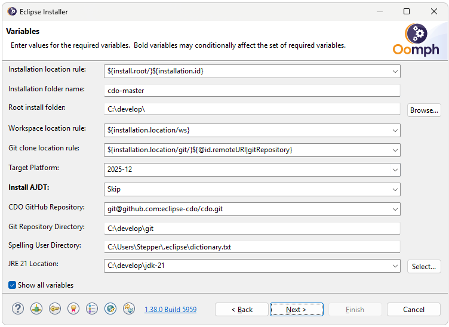
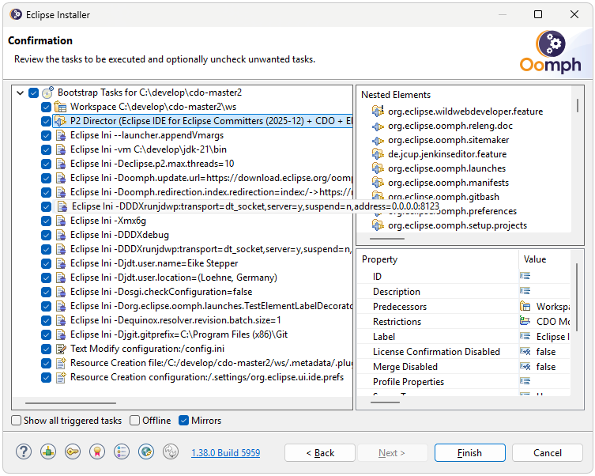

Installing the Sources


Installing the Sources |
|
For developing applications on top of CDO it is normally sufficient to have the CDO SDK installed in your Eclipse target platform, which is described in section Preparing the Workspace.
However, if you want to work on CDO itself or want to analyze the commit history of CDO, you need to have the CDO sources available in your workspace. This chapter guides you through the trivial process of installing a development environment for the CDO sources.
The installation is fully automated and will be performed by the Eclipse Installer. Here are the four steps you need to follow:


The installer will download and install the required Eclipse IDE packages, CDO, and all its dependencies. This may take a while depending on your internet connection speed. Once the installation is complete, the installer will launch the new IDE. Each time the IDE is started, it will check for updates and perform them automatically. Please refer to the Eclipse Installer documentation for details.